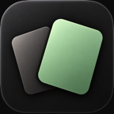
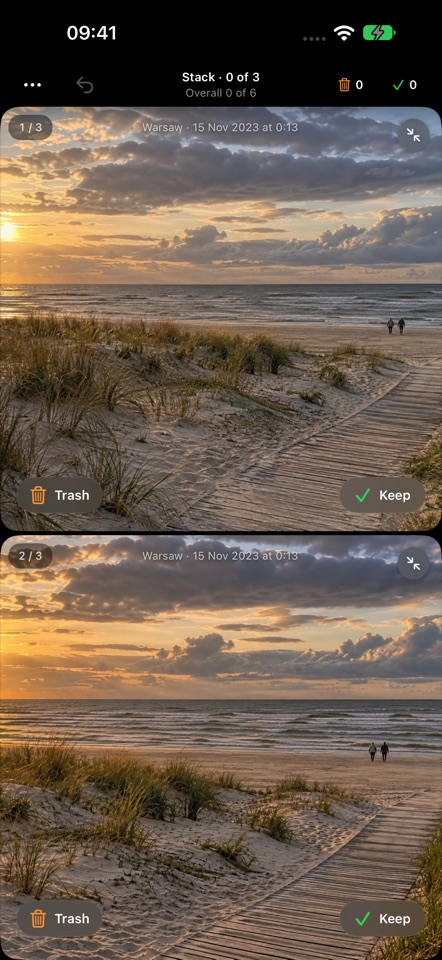

Right to Keep. Left to set aside.
Swipe a photo or video, or use the buttons. A left swipe puts it in the app’s Trash. It doesn’t delete the original.

Keep or SkipA little less clutter. A little more clarity.
Make room for the moments that matter. Review your iPhone photos and videos, one choice at a time.
Free · iPhone · No account neededApp Store link coming with the public release.

Less deciding. More doing.
Swipe a photo or video, or use the buttons. A left swipe puts it in the app’s Trash. It doesn’t delete the original.
Compare similar photos side by side. Keep a Best in view, save more than one, and Undo when you change your mind.
Check Keep and Trash together in History. Restore a choice or explicitly delete selected files through Apple Photos.
Your library stays yours.
Keep or Skip uses Apple Vision on your device. Your photos, videos and image analysis aren’t sent to the developer or an external AI service.
Apple services may retrieve iCloud previews or resolve a place name from photo coordinates. Optional usage analytics is separate from photo analysis. Read the details.